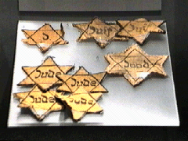

|
Doppelmord
von Dr. Rolf Kornemann
Wohnungsauflösungen am Vorabend der Deportation
Nach der Wannsee-Konferenz verstärkten sich die Deportationen. Zur "Erleichterung" ihres Auffindens war im März 1942 angeordnet worden, daß an jüdischen Wohnungen auch ein Judenstern unter der Klingel anzubringen sei50).
Vor der Deportation war eine Vermögenserklärung auszufüllen, "in der sich die Härte der Verfolger, die voller Eifer bei der Sache waren, mit der Qual der Vertriebenen in einem dokumentarischen Akt vereinte". Dem Merkblatt der Gestapo Würzburg sind Einzelheiten zu entnehmen:
"1. Die Vermögenserklärungs-Vordrucke sind genauestens auszufüllen und eigenhändig zu unterschreiben.
2. Für jedes Familienmitglied ist ein Vordruck zu verwenden ...
3. Sämtliche das Vermögen verkörpernde Urkunden ..., sich auf das Vermögen beziehende und sonstwie vermögensrechtliche Fragen regelnde Urkunden ... sind dem Vermögensverzeichnis beizufügen. Hierzu ist ein großer Umschlag vorzubereiten. Der Umschlag ist selbst zu besorgen und mit der genauen Anschrift zu versehen ...
4. Da das Vermögen rückwirkend ab 15.10.1941 staatspolizeilich beschlagnahmt ist, sind die seit diesem Zeitpunkt getroffenen Verfügungen über Vermögensteile wirkungslos ...
5. Das lebende Inventar (Katzen, Hunde, Vögel) ist bis zum Abholungszeitpunkt anderweitig unterzubringen.
6. Sämtliches Eigentum (insbesondere Möbel) ist in den später zu versiegelnden Wohnraum zu verbringen, so daß hinsichtlich des Eigentums an einem Gegenstand kein Zweifel bestehen kann. Innerhalb der Wohnung müssen sämtliche Schränke und andere Behältnisse unversperrt sein, die Schlüssel müssen stecken.
7. Sämtliche Räume sind bis zum Abholungszeitpunkt aufzuräumen und zu reinigen, insbesondere dürfen gebrauchtes Geschirr und Abfälle nicht herumstehen bzw. -liegen. Fensterläden sind bei der Abholung zu schließen.
8. Bei der Abholung müssen sämtliche Licht-, Gas- und Wasserrechnungen beglichen (Anmerkung: Zur Abwehr des Vermieterpfandrechts) und die Haupthähne zu den Licht-, Gas- und Wasserleitungen - soweit nicht Teilwohnung - abgestellt sein. Ferner darf in Öfen und Herden kein Feuer brennen. Sämtliche Haus- und Wohnungsschlüssel sind bereitzuhalten und mit einem Anhänger zu versehen. Auf dem Anhänger ist die genaue Anschrift und Hausnummer anzugeben. Der zuständige Hausverwalter bzw. Hausbesitzer ist von der Evakuierung zu verständigen"51).

Nach dem "Erlaß des Reichsfinanzministers vom 4. November 1941"54) war u.a. zu prüfen, welche Gegenstände der "entjudeten" Wohnungen für die Reichsfinanzverwaltung gebraucht werden können". Es kommen in Betracht für die Ausstattung der Ämter: Schreibtische, Papierschränke, Sessel, Teppiche, Bilder und anderes mehr; für die Ausstattung der Erholungsheime und Schulen der Reichsfinanzverwaltung: Schlafzimmer, Betten, Musikinstrumente und insbesondere Bettwäsche, Tischwäsche, Handtücher etc. Die Gegenstände, die nicht für Zwecke der Reichsfinanzverwaltung gebraucht werden, sind in geeigneter Weise zu veräußern. Versteigerungen in den Wohnungen selbst sind nach den gemachten Erfahrungen unerwünscht. Es besteht die Möglichkeit, daß die Städte, denen die Ausstattung fliegergeschädigter Volksgenossen obliegt, bereit sind, größere Mengen gegen angemessene Bezahlung abzunehmen. Die Veräußerungspreise sind in allen Fällen nach den Schätzungen zuverlässiger Sachverständiger festzusetzen55). Soweit ein Liquidationserlös hierdurch anfiel, sollte er nicht zuletzt für die "Finanzierung der Maßnahmen zur Lösung der Judenfrage" verwandt werden, "war doch die Finanzierung der z.T. außerordentlich kostspieligen Maßnahmen bisher ohne Inanspruchnahme von Haushaltsmitteln durchgeführt worden"56).
© Copyright by Dr. Rolf Kornemann
© Layout Birgit Pauli-Haack 1997
|